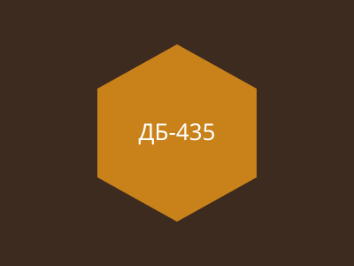

Рамка ДБ-435 ВЛ розс.
Розсувна рамка для корпусу ДБ.

Виготовлена з ВЛ-сировини за ДСТУ, з дотриманням ДНЗ-нормативу для розс. типу. Підходить для корпусів ДБ та багатокорпусних систем типу Ф-2.
Комплектується без дроту.
| Параметр | Значення |
|---|---|
| Типорозмір | 435×300 мм, ДБ |
| Матеріал | липа, ВЛ-сорт |
| Дротяне армування | ДНЗ/8р |
Додатково
Відправляємо перевізником. Терміни та вартість — за окремими умовами.